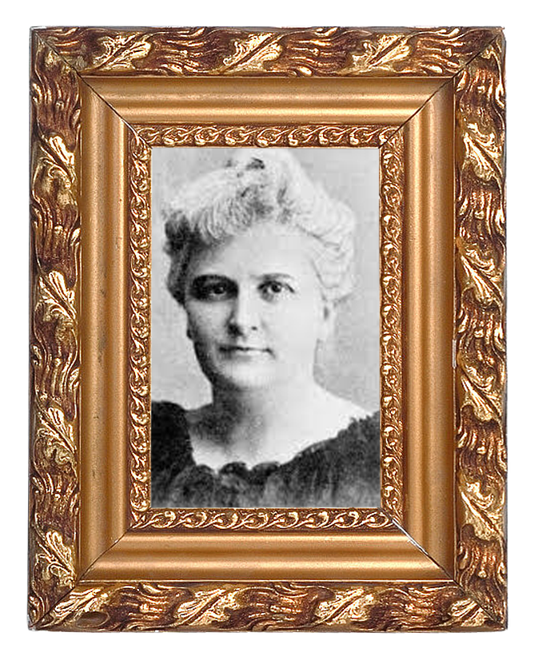

미국 사회에서, 그녀가 활동한 미국 남부 크레올은 특히나 보수적인 사회였다. 그녀의 책 각성은 출간되자 온갖 비난과 경멸이 대상이 되었다. 책이 발표되자 마자 사라질 위기에 처했다. 여성의 부도덕한 일탈을 그렸다는 이유로 출판 금지에 처했다. 노골적 성묘사로 많은 비난을 받았고 쇼팽은 재정난은 물론 쇼팽은 재정난은 물론 문인으로서의 미래까지 의심을 받았다.


각성에는 시대의 보편적인 여성상을 따르고 어머니상을 유지하던 주인공이 나온다. 그녀는 이야기를 통해 기존의 여성상을 부수고 자아실현의 주체로서의 여성을 재조명하였다. 이는 굉장히 혁신적인 생각이었다. 결혼하지 않은 여성은 별종 취급 당하고 남성 없이 혼자 사는 여성은 존재할 수 없던 시대에 케이트 쇼팽의 주인공은 남성에 종속되는 삶을 떠나 자신만의 정체성과 자유를 깨닫게 된다. 당시로선, 그리고 지금 보아도 시대를 앞서가는 새롭고 혁신적인 생각이었다. 여성의 성적 욕망이란 금기시된 소재였고 지금까지도 쉽게 다뤄지지 않는 소재이다. 케이트 쇼팽은 당시 보수적인 사회에서 여성의 성적 욕망과 자유에 대해 다루는 혁신가였다.

그녀는 당시 엄청난 반항을 불러왔다. 그러나 극심한 비판과 함께 그녀의 작품은 잊혀졌다. 이후 20세기가 되어서야 페미니스트들에 의해 그녀의 작품은 재조명되었고 지금은 지위를 인정받는 미국의 대표 작가가 되었다. 그녀의 작품은 기존의 여성에 대한 억압을 떠나 독립적 개인으로서 여성을 그렸으며 더 나아가 독립을 이루고 자아를 해방시키는 모습을 소설을 통해 실현시켰다. 그녀는 당시에 인정을 받지 못했으나 지금 21세기에서 그녀의 작품은 미국 최고 소설가로 인정받으며 그녀의 작품 또한 높이 평가받고 있다.